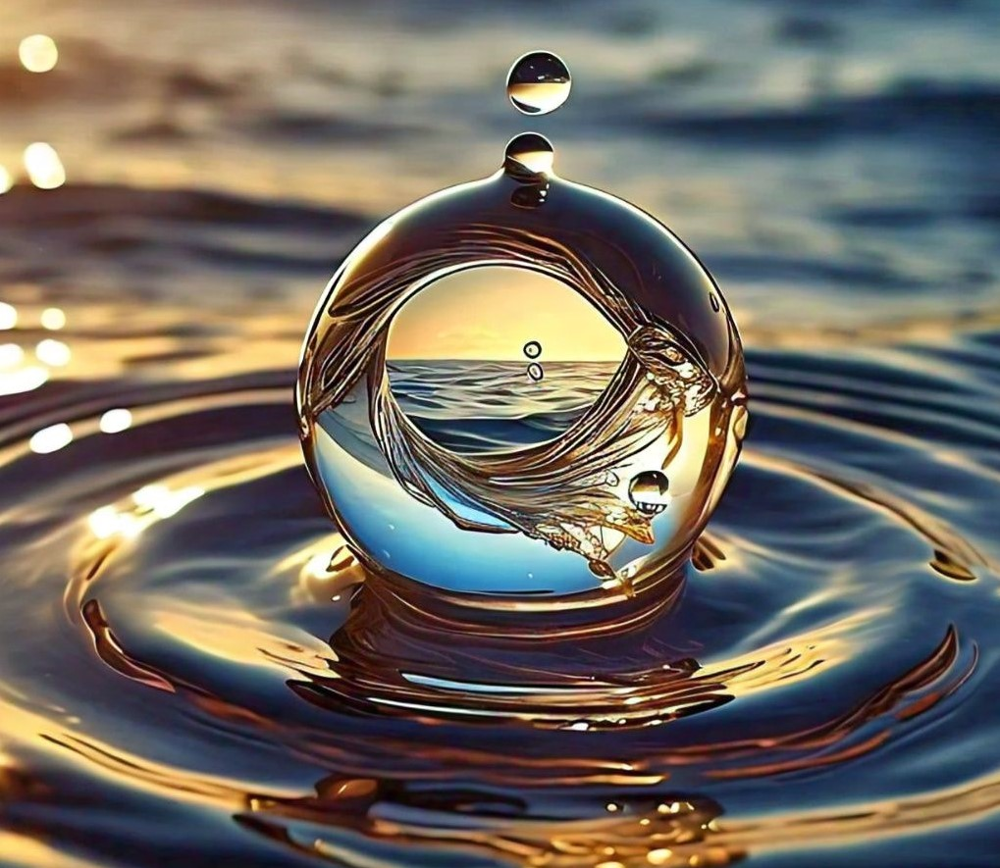

Características del Agua
agua es una molécula sencilla pero esencial, compuesta por dos átomos de hidrógeno y uno de oxígeno (H₂O). Aunque parece común, su composición química le otorga propiedades únicas, como la capacidad de disolver una gran cantidad de sustancias, lo que la convierte en el solvente universal. Es crucial para muchos procesos biológicos, como el transporte de nutrientes y el mantenimiento de la temperatura corporal. El agua no es una biomolécula orgánica, sino inorgánica, pero su papel en la vida es indispensable.
